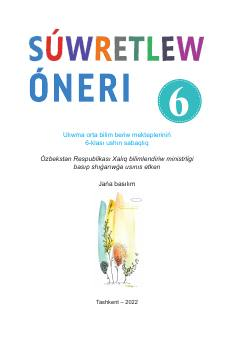

SÓ6-sinf o'quvchilari uchun tasviriy san'at fani bo'yicha darslik.
Mazkur darslik umumiy o'rta ta'lim maktablarining 6-sinf o'quvchilari uchun mo'ljallangan bo'lib, tasviriy san'at va chizmachilik asoslarini o'rgatadi. Kitobda kompozitsiya, rangtasvir, haykaltaroshlik, zamonaviy san'at yo'nalishlari (fluid art, pop art, zentangle va boshqalar) hamda amaliy mashg'ulotlar haqida batafsil ma'lumot berilgan.